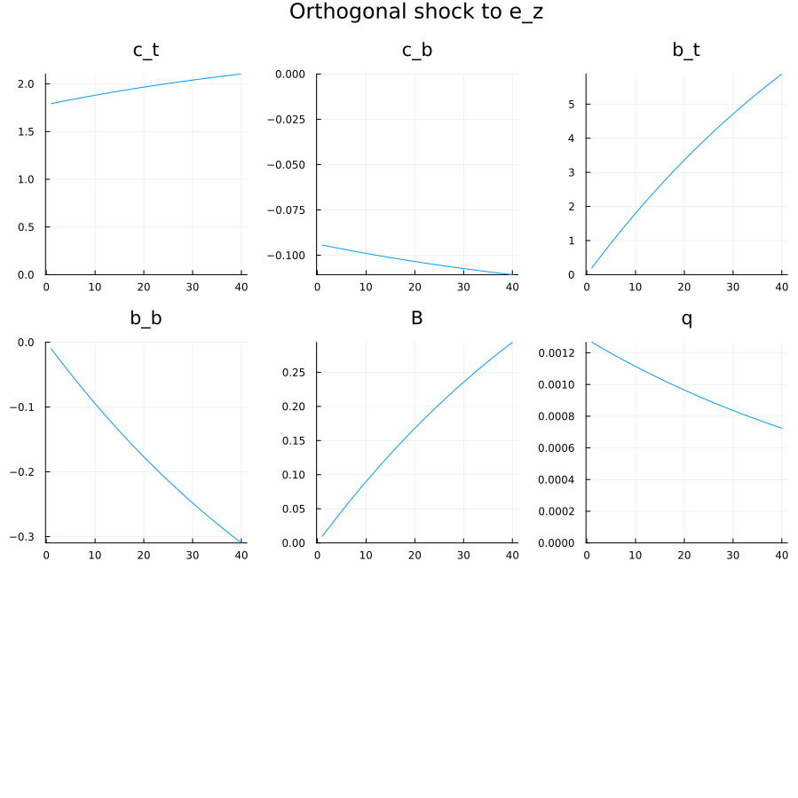

# uncomment the next lines, the first time you run
# import Pkg; Pkg.add(["DBnomics", "Dynare", "DataFrames"])A two agents model of inequalities.
Business Cycles and Fluctuations - AE2E6
Modfiles
No matching items
Uncomment the following lines to install needed packages (if not already present).
Preference for wealth and marginal propensity to consume
For now, we consider a single representative agent. She has the ability to buy a two periods bond, yielding 1 after one period. The price of the bond at any date is \(q\), hence its (riskfree) interest rate is \(r=1/q\).
Agent values consumption \(c_t\) and wealth \(b_t q_t\) so that she maximizes1:
\[\max \sum_t \beta^t \left( \frac{c_t^{1-\frac{1}{\sigma}}}{1-\frac{1}{\sigma}}+ \varphi \frac{ (1+b_t)^{1-\frac{1}{\eta}} } {1-\frac{1}{\eta}} \right)\]
under the budget constraint
\[c_t = y_t + b_{t-1} - b_t q_t\]
where \(y_t\) is exogenous income following AR1
\[(y_t-\overline{y})=\rho (y_{t-1}-\overline{y}) + \epsilon^y_t\]
using Dynare- Write down the optimality condition for debt holdings.
Correction
We get:
\[q_t = \beta \left(\frac{c_{t+1}}{c_{t}}\right)^{-\frac{1}{\sigma}}+\varphi \left(\frac{1 + b_t q_t}{c_{t}}\right)^{-\frac{1}{\sigma}}\]
What are the equations defining the deterministic equilibrium?
Correction
At the equilibium, the last equation becomes. \[q = \beta + \varphi \left(\frac{1 + b q}{c}\right)^{-\frac{1}{\sigma}}\]
3. Inspect and run one_agent.mod model. Show that there is a unit root. Can you interpret it?
Correction
The one_agent.mod model is a standard consumption saving model without preference for wealth.
In general, if the solution of a model is $y_t = A y_{t-1} where \(y_t\) is the vector of variables, we have a unit root when one of the eigenvalues of A is equal to 1 in absolute terms.
In the specific case of the modfile. We can directly read the values of matrix \(A\) are given in the output of dynare (precisely it is a subset of \(A'\))
Coefficients of approximate solution function (reduced form)
───────┬──────────────────
│ y_t c_t b_t
──────────────────────────
ϕ(b) │ 0.0 0.0385 1.0
e_y_t │ 0.1 0.0038 0.1
───────┴──────────────────The rows correspond to the (predetermined) states. Non predetermined variables do not appear as rows (or equivalently with zeros everywhere).
Here we see that \(b_t\) is the only endogenous state. We also see that its dynamic is given by:
In particular, we see rule: \(b_t = 1.0 b_{t-1} + 0.1 e_{y,t}\).
In other words, the dynamic of \(b\) is an AR1 with perfect persistence.
This behaviour (like in an open economy) comes from the fact that any steady-state level of debt is feasible (in a deterministic model). Hence shocks can affect the steady-state permanently.
@dynare("one_agent.mod");Dynare version: 0.9.11
2024-05-16T15:39:08.946: Starting @dynare one_agent.mod
["one_agent.mod", "language=julia", "json=compute"]
Dynare preprocessor version: 6.4.0+0
2024-05-16T15:39:08.950: End of preprocessing
2024-05-16T15:39:08.953: Start parse_statements!
Steady state
───┬─────
y │ 1.0
c │ 1.0
b │ 0.0
───┴─────
Coefficients of approximate solution function (reduced form)
───────┬──────────────────
│ y_t c_t b_t
──────────────────────────
ϕ(b) │ 0.0 0.0385 1.0
e_y_t │ 0.1 0.0038 0.1
───────┴──────────────────
Note: ϕ(x) = x_{t-1} - steady_state(x)
THEORETICAL MOMENTS
──────────┬───────────────────────────
VARIABLE │ MEAN STD. DEV. VARIANCE
──────────────────────────────────────
y │ 1.0 0.001 0.0
c │ NaN NaN NaN
b │ NaN NaN NaN
──────────┴───────────────────────────
VARIANCE DECOMPOSITION (in percent)
──────────┬─────
VARIABLE │ e_y
────────────────
y │ 1.0
──────────┴─────
CORRELATION MATRIX
───┬─────
│ y
─────────
y │ 1.0
───┴─────
AUTOCORRELATION COEFFICIENTS
───┬─────────────────────────
│ 1 2 3 4 5
─────────────────────────────
y │ 0.0 0.0 0.0 0.0 0.0
───┴─────────────────────────
2024-05-16T15:39:08.990: End parse_statements!
2024-05-16T15:39:08.990: End parserStarting preprocessing of the model file ...
Found 3 equation(s).
Evaluating expressions...
Computing static model derivatives (order 1).
Normalizing the static model...
Normalization failed with cutoff, trying symbolic normalization...
Could not normalize the static model. Variable b is not in the maximum cardinality matching.
Computing dynamic model derivatives (order 1).
Normalizing the dynamic model...
Finding the optimal block decomposition of the dynamic model...
3 block(s) found:
3 recursive block(s) and 0 simultaneous block(s).
the largest simultaneous block has 0 equation(s)
and 0 feedback variable(s).
JSON written after Computing step.
Preprocessing completed.
- What is the consumption response to a temporary income shock? To a permanent one? (with autocorrelation \(\rho=0.9\) and \(\rho=1.0\))
Correction
Change the income equation:
- for a temporary shock remove the zero to get:
y = ybar + e_y - For a persistent one, define a new parameter in the parameters line initialized to
rho=0.9and change the equation toy - ybar = rho*(y(-1) - ybar) + e_y. In the caserho=1.0note the apparition of a second unit root.
In the simulations, pay attention to the magnitude of the shock e_y (1% by default) to compare it to the magnitude of the response for assets b.
- In the modfile, add a preference for wealth term in the utility function and adjust the calibration of
betaaccordingly.
Correction
Parameters phi and eta are already predefined.
Add + phi*(1+b*q)^(-1/eta)/(c^(-1/sigma)) to the Euler equation and beta = 1/r - phi*(1+bbar*q)^(-1/eta)/(cbar^(-1/sigma)); in the definition of parameters
The simulation runs, only when the command check succeeds, in particular, when the steady-sate is satisfied. If it is not the case, you need to adjust the equations/calibration.
Result is in the one_agent_2.mod file.
Here we see that one unit root has disappeared, because pref. for wealth pins down equilibrium asset holdings.
6. Simulate the response to a temporary and a persistent shock. Given phi what is the effect of eta?
Correction
Now the savings response to transitory shock is mean reverting, while the response to a persistent shock is persistent and even increasing over time.
eta affects the long run savings level in response to a temporary income shock. (If curious you should be able to check it does not depend on phi).
A two agents model
We now assume there are two agents: bottom and top earners. Top earners amount for a fraction \(\chi\) of the total population. Together they earn a fraction \(z\in[0,1]\) of the total production \(y\) which is an AR1 process as in the first part. The rest goes to the bottom earners.
Top earners can save by lending to bottom earners. We denote by \(B_t\) the total quantity of riskfree bonds, traded at \(q_t\). Note that debt per capita is \(\frac{B_t}{\chi}\) for top earners and \(\frac{B_t}{1-\chi}\) for bottom earners. Top earners have preference for wealth as in the first part, while bottom earners have standard preferences (with \(\varphi=0\))
- Write down the budget equations for both agents. What are the new Euler equations? Check that it is consistent with the
two_agents.modmodfile. What are the per capita variables?
Correction
Budget constraints are included in the modfile.
Per capita variables: c_t, c_b, b_t and b_b.
- What is qualitatively the effect of a permanent redistributive shock? (simulate the model)
Correction
With increased income, top earners want to increase their asset holdings. This will happen since bottom earners are indifferent in the steady-state. During the transition however, we see a decrease in the interest rate (to convince borrower to accept a decreasing path of consumption over time).

@dynare("two_agents.mod");Dynare version: 0.9.11
2024-05-16T16:04:04.483: Starting @dynare two_agents.mod
["two_agents.mod", "language=julia", "json=compute"]
Dynare preprocessor version: 6.4.0+0
2024-05-16T16:04:04.488: End of preprocessing
2024-05-16T16:04:04.493: Start parse_statements!
Coefficients of approximate solution function (reduced form)
────────┬─────────────────────────────────────────────────────────────────────────
│ y_t z_t c_t_t c_b_t b_t_t b_b_t B_t q_t r_t
──────────────────────────────────────────────────────────────────────────────────
ϕ(y) │ 0.9 0.0 2.4446 0.8187 -2.4617 0.1296 -0.1231 0.1745 -0.1887
ϕ(z) │ 0.0 1.0 17.9241 -0.9434 1.9191 -0.101 0.096 0.0127 -0.0137
ϕ(b_t) │ -0.0 0.0 0.1658 0.0439 -0.9495 0.05 -0.0475 0.096 -0.1038
ϕ(b_b) │ -0.0 0.0 2.1269 0.8881 -36.7706 1.9353 -1.8385 1.8258 -1.9748
e_y_t │ 1.0 0.0 2.7162 0.9097 -2.7352 0.144 -0.1368 0.1938 -0.2097
e_z_t │ -0.0 1.0 17.9241 -0.9434 1.9191 -0.101 0.096 0.0127 -0.0137
────────┴─────────────────────────────────────────────────────────────────────────
Note: ϕ(x) = x_{t-1} - steady_state(x)
THEORETICAL MOMENTS
──────────┬─────────────────────────────
VARIABLE │ MEAN STD. DEV. VARIANCE
────────────────────────────────────────
y │ 1.0 0.0229 0.0005
z │ NaN NaN NaN
c_t │ NaN NaN NaN
c_b │ NaN NaN NaN
b_t │ NaN NaN NaN
b_b │ NaN NaN NaN
B │ NaN NaN NaN
q │ 0.9615 0.0046 0.0
r │ 1.04 0.005 0.0
──────────┴─────────────────────────────
VARIANCE DECOMPOSITION (in percent)
──────────┬────────────────
VARIABLE │ e_y e_z
───────────────────────────
y │ 1.0 -0.0
q │ 0.9249 0.0751
r │ 0.9249 0.0751
──────────┴────────────────
CORRELATION MATRIX
───┬──────────────────────────
│ y q r
──────────────────────────────
y │ 1.0 0.9617 -0.9617
q │ 0.9617 1.0 -1.0
r │ -0.9617 -1.0 1.0
───┴──────────────────────────
AUTOCORRELATION COEFFICIENTS
───┬────────────────────────────────────────
│ 1 2 3 4 5
────────────────────────────────────────────
y │ 0.9 0.81 0.729 0.6561 0.5905
q │ 0.8324 0.7492 0.6742 0.6068 0.5461
r │ 0.8324 0.7492 0.6742 0.6068 0.5461
───┴────────────────────────────────────────
2024-05-16T16:04:04.599: End parse_statements!
2024-05-16T16:04:04.599: End parserStarting preprocessing of the model file ...
Found 9 equation(s).
Evaluating expressions...
Computing static model derivatives (order 1).
Normalizing the static model...
Finding the optimal block decomposition of the static model...
6 block(s) found:
5 recursive block(s) and 1 simultaneous block(s).
the largest simultaneous block has 2 equation(s)
and 2 feedback variable(s).
Computing dynamic model derivatives (order 1).
Normalizing the dynamic model...
Finding the optimal block decomposition of the dynamic model...
3 block(s) found:
2 recursive block(s) and 1 simultaneous block(s).
the largest simultaneous block has 6 equation(s)
and 6 feedback variable(s).
JSON written after Computing step.
Preprocessing completed.
Calibrating and simulating the model
The model in the modefile is pre-calibrated to match US data in 1983. Assume the model is in equilibrium for an initial level of debt \(B=0.91\) (which is the debt/gdp ratio in the us in 1983).
Taking \(\varphi=0.05\) as constant, for any given choice of \(\eta\), there is a unique value of \(\beta\) consistent with the equilibrium as in the one agent case.
Now we would like to calibrate the value of \(\eta\) so as to match the marginal propensity to save of top earners which was approximately 50% in 1983.
Since the two agents model is already calibrated for most variables, we reuse it rather than adapting the one agent model.
- In the model
two_agents.modreplace the Euler equation of bottom earner byq = 1/rbar. Justify why, from the top earners perspective, the model is now equivalent to a single agent model.
Correction
Interest rate is the only manifestation of bottom earners preferences in the model. If we set it equal to a constant, top earners are now facing an infinitely elastic demand of bonds as in the one agent case.
@. Use the modified model to compute the marginal propensity out of a permanent income shock after 6 periods. Choose parameter eta so that this m.p.s. is approximatively 50%.
Correction
Several options here. We can just make a persistent shock of size sig_z to the overall income \(y\) and compute the marginal propensity to save at different periods (variable mps). It must be normalized by the initial income level of top earners. We can then run computations for different values of \(eta\) until we find the desired value.
Modified model is two_agents_mps.mps. I found eta=0.6 to be a good calibration.
@dynare("two_agents_mps.mps")- What is the effect of a 10% permanent increase in inequalities? Over 30 years and in the long run?
Correction
Several options here. We can just make a persistent shock of size sig_z to the overall income \(y\) and compute the marginal propensity to save at different periods (variable mps). It must be normalized by the initial income level of top earners. We can then run computations for different values of \(eta\) until we find the desired value.
Modified model is two_agents_mps.mps. I found eta=0.6 to be a good calibration.
Footnotes
this is the “preference for wealth” specification↩︎